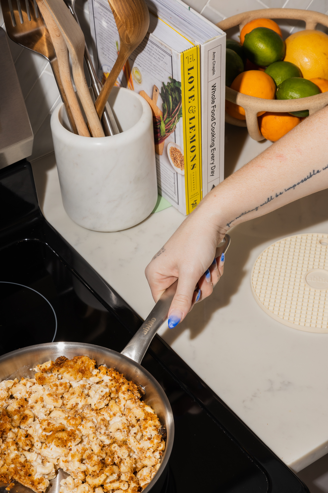

Back Home
Homemade Mac and Cheese

Description
This classic baked mac and cheese recipe with a buttered bread crumb topping is creamy and comforting. It's easy to make the cheese sauce from scratch on your stovetop, starting with a roux and adding milk, Cheddar, and Parmesan, resulting in a rich, decadent sauce that coats every nook and cranny of the noodles.
Ingredients
- Macaroni: This homemade mac and cheese starts with a box of uncooked macaroni noodles.
- Butter and flour: You'll need butter and flour to make a roux for the cheese sauce. You'll also need two tablespoons of butter for the topping.
- Milk: Use whole milk for the richest flavor and texture.
- Cheese: This baked mac and cheese recipe calls for Cheddar and Parmesan cheeses.
- Seasonings: Salt and pepper goes into the sauce, while paprika is sprinkled over the topping.
- Bread crumbs: Use store-bought dried bread crumbs Macaroni: This homemade mac and cheese starts with a box of uncooked macaroni noodles.
- Butter and flour: You'll need butter and flour to make a roux for the cheese sauce. You'll also need two tablespoons of butter for the topping.
- Milk: Use whole milk for the richest flavor and texture.
- Cheese: This baked mac and cheese recipe calls for Cheddar and Parmesan cheeses.
- Seasonings: Salt and pepper goes into the sauce, while paprika is sprinkled over the topping.
- Bread crumbs: Use store-bought dried bread crumbs
Steps
- Boil the noodles: Boil the macaroni in salted water until the noodles are al dente. Drain and transfer to a prepared baking dish.
- Make the cheese sauce: Melt butter, then whisk in the flour. Whisk in the milk, bring to a simmer, and stir in the cheeses. Season with salt and pepper and continue simmering until the sauce is thick. Pour the sauce over the noodles and stir.
- Make the topping: Melt two tablespoons of butter in a skillet, add the bread crumbs, and toast until the crumbs are brown. Spread the topping over the macaroni and cheese, then sprinkle with paprika.
- Bake the mac and cheese: Bake in the preheated oven until the topping is golden brown.
Recipe Credit